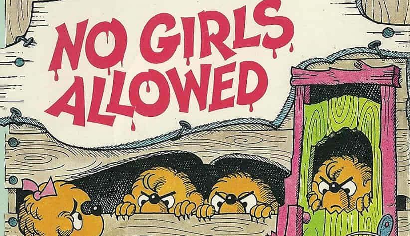
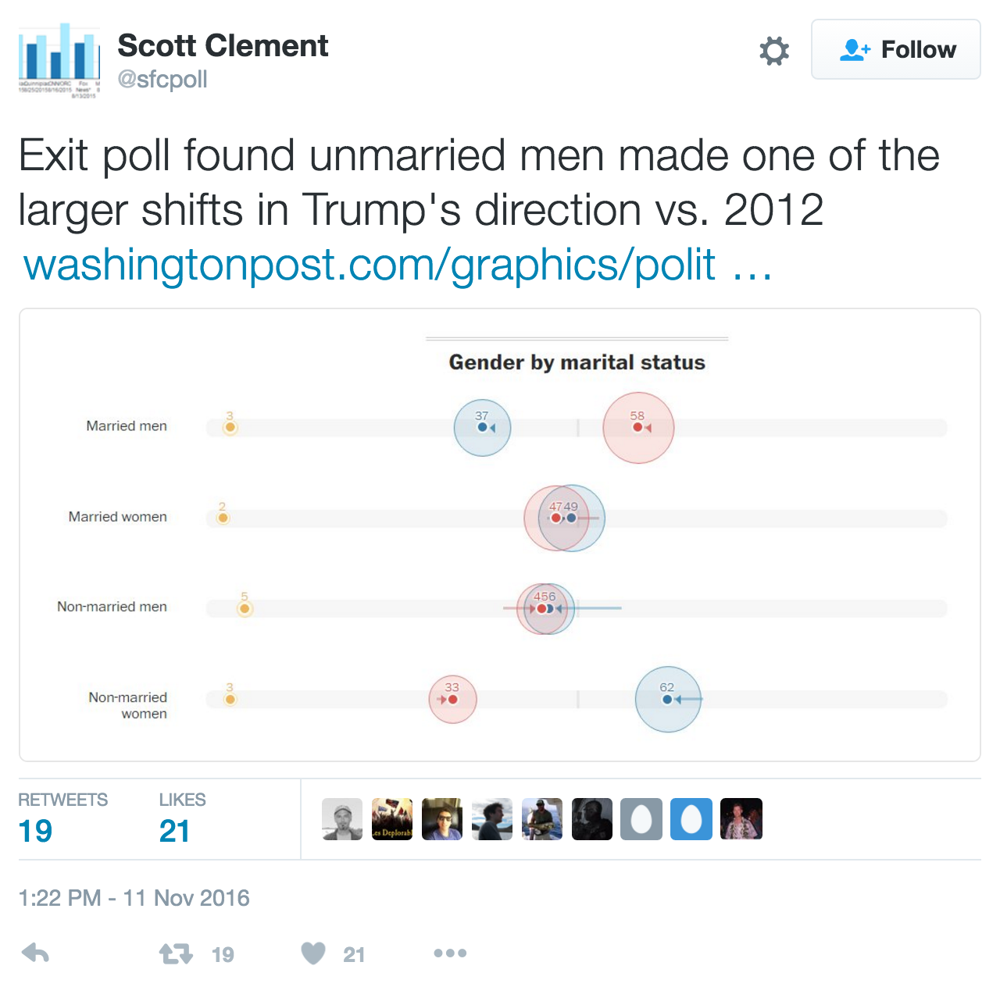

Samseau is a player philosopher psychologist who enjoys a good discussion. You can follow him on Twitter.


This is the first installment of a multi-part series.
Now that the election is over, and Trump has won against nearly impossible odds, and yet I knew he’d overcome them and take the blue collar rust belt states and Florida with at least 30% of the Latino vote, it’s time to get down to business, gentlemen. Just as I was confident Trump would win in a fair election, I also know what is going to happen to the future of America’s economy should his legislation pass. I know what needs happen in the Republican party for the country to survive, and for the well-being of our neighbors. I also know what must happen for the men here.
During the primaries, all we needed was to do was campaign on the internet. And there was a reason for that. People who vote in the primaries are typically well-informed voters. Well-informed voters use the internet. The internet is far more powerful than television or knocking on individual doors. Well-informed voters understood the TV had become propaganda back in 2013-2014, and we were the biggest part of redpilling the internet.
It’s funny, the term redpill, as far as I am aware, was coined in the manosphere, with Roissy being the most articulate (now Chateau Heartiste), then we developed more red pill ideas here which were broadcast more at Return of Kings, and now the term “red pill” is even used everywhere on the net. You even hear it in day to day conversation sometimes. Our effect on the culture has been massive.
They say politics is downstream from culture, and now we have a President who once said to “grab ‘em by the pussy.” We shouldn’t dismiss how influential we’ve been, although it can be hard to measure our influence as we have no direct measuring instruments to know for sure. But we can be confident in our knowledge that the redpill concept started in our communities and spread to the rest of the world.
How, you ask? There are two types of leaders – political leaders, and thought leaders. Both are equally important, but the internet has changed the nature of the game for intellectuals. Previously thought leaders had to get their word out through books. Books are a holdover from the printing-press era, a 550 year old invention. We are so used to the reality of the printing press and books that people are still catching onto the power of the internet.
We no longer need books. Authors can just write essays and get read within seconds of publishing. Thought leaders today are more powerful than ever before.
For 99.9% of people, all thoughts come from words used by other people. Almost all knowledge is inherited, except for the geniuses among us who create the first thoughts. This is why Orwell said freedom of speech is really freedom to think. This is also why free-will is largely an illusion. Your thoughts are rarely your own. Therefore we know what we hear spoken by others came from someone else. And the whole redpill philosophy is nothing more than a reassertion of basic human nature, and, more importantly and novelly, of female nature, something completely lost on the vast majority of philosophers throughout Western Civilization with the notable exception of Arthur Schopenhauer’s On Women, and ancient Christian thinkers like St. Augustine and the Apostle Paul.
Thus I, Mike Cernovich, Roosh, and most of the smartest men of the manosphere all give credit to Roissy, who was the most articulate and accurate philosopher of women in the 20th century; an early adopter of the internet to spread contrary ideas, a man who took the simplistic PUA movement of the early 2000’s into so much more. He sparked a movement that took Roosh to the next level (ironic as Roosh’s blogging encouraged Roissy to start his blog) and create his own forum, which then gave rise to many esteemed posters, and Return of Kings as the pre-eminent media outlet of the redpill manosphere.
The Roosh V Forum in particular has easily been the greatest think-tank produced in the last 30 years on cultural issues facing Western men. In fact, I am tempted to say it is the greatest cultural think-tank of all time because of it’s use of the internet, plus it’s rules for free speech, plus the banning of women (because they distract men!).
So many different men from America have chimed in here, from every state in the country, although mainly from the Northeast, and many from all over the world, producing thoughts and opinions contrary to nearly everything taught about women in the past 100 years, and in many ways, the past 1800 years. You have to go back to Roman times where the women were equally as decadent as the ones we have today to find similar opinions as ours, such as Ovid, but even then, the lack of internet meant it was easy to suppress those voices and keep the truth of women hidden from other men.

As a result, the manosphere was extremely important for winning Trump the primaries. We tilled the cultural soil using the internet as our plow, which paved the way for a man like Trump to reap the harvest.
To understand just how big our impact has been, we need only to look at how much single men abandoned the Democrats and their feminist platform. A loss of 15% Democrats and a gain of 5% Republicans translates to at least 15 million men:

Make no mistake, we’ve destroyed the hegemony of the feminist narrative with our internet army. At least half of America’s single men (mainly young men) think feminism is bullshit. And since it is mainly men who vote in the primaries, we were able to use logic and reason to persuade the non-internet men into accepting Trump and dominate the primaries, with the largest victory of any Republican nominee, ever, of 14 million votes.
A resounding victory, yet, we still have more work to do, although at this point the inertia is doing most of the work for us. We’re also moving away from hypocritical Christianity and toward real Christianity, where acceptance of our Neighbor’s sins is the norm instead of ostracization so people can love and heal each other as neighbors. This is also critical, as I will explain later.
Still, when Trump announced his campaign, there was still a lot of uncertainty about the man and his policies. We hashed out our arguments for and against Trump on the forum, and once our arguments were developed, we went out onto Twitter, political websites like Breitbart, Reddit, DallyCaller, 4chan, 8chan, the disqus comment sections of mainstream news like NBC and MSNBC, and we crushed all other arguments with ease. The people who watched us defeat our cuckservative opponents then copy-pasted the arguments to other sites and took them to their friends and family, who then carried these arguments to other places, etc.
The internet is truly an amazing game changer, and it has had an amazing impact on our culture and democracy.
Read Next: How Donald Trump Vanquished His Enemies And Conquered The Republican Party